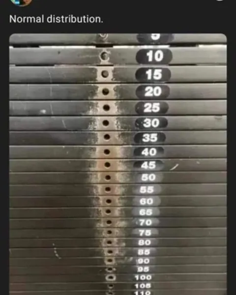

📡 Küldetés-eligazítás
📡 Mr. Szürreál kivetít egy oszlopdiagramot: Szabadka lakossága 2011 és 2022 között „összeomlott” — a 2022-es oszlop alig ötöde a 2011-esnek. Véd Vilmos: Nézze meg valaki a függőleges tengelyt! Nagol: A csökkenés valós, de nem ekkora. Mielőtt bármit ábrázolunk, tisztázzuk: honnan jön az adat, mit mérünk, és melyik diagram mit mutat. SZVETI: A tengelyt 120 000-nél vágták el. Rögzítve.
Sokaság, ismérv, minta
A statisztika adatokat gyűjt, rendez, ábrázol és értelmez. A 2022-es szerbiai népszámlálás (Popis 2022) jó példa: minden lakosról ugyanazokat az adatokat rögzítették.
📗 Sokaság, egyed, minta
A vizsgált dolgok összessége a sokaság (populáció), egy-egy tagja az egyed. Ha nem az egész sokaságot vizsgáljuk, hanem csak egy részét, az a minta. A népszámlálás a teljes sokaságot vizsgálja (Szerbia 6 647 003 lakosát), egy közvélemény-kutatás csak egy mintát (például 1000 megkérdezettet).
📗 Ismérv
Az ismérv (változó) az a tulajdonság, amelyet az egyedeken megfigyelünk. Minőségi ismérv kategóriákat ad (nem, számítógépes ismeret, kedvenc sport). Mennyiségi ismérv számértéket ad, amellyel számolni is van értelme; lehet diszkrét (megszámolható: a háztartás taglétszáma) vagy folytonos (mért: életkor, testmagasság, hőmérséklet).
📗 Mérési skálák
A nominális skála csak megkülönböztet (nem, mezszám, irányítószám). Az ordinális skála sorba is rendez (számítógépes ismeret: nem ismeri < részben ismeri < ismeri; iskolai végzettség). Az intervallumskálán a különbségeknek is van értelme (hőmérséklet °C-ban, évszám, pontszám).
A minta akkor mond valamit a sokaságról, ha véletlenszerűen választjuk: minden egyednek ugyanakkora esélye van bekerülni. Ha csak a könnyen elérhetőket kérdezzük meg (a barátainkat, egy közösségi oldal követőit), a minta torz lesz, és a következtetés sem érvényes a sokaságra.
⚠️ Véd Vilmos csapda — „a barátaim szerint…”
Vilmos megkérdezte hét barátját, szeretik-e a matekot. Mind igent mondtak, ezért kijelentette: „a gimnazisták 100%-a szereti a matekot”. A minta kicsi és torz: a barátok hasonlítanak egymásra, és a kérdezőnek is szívesen mondanak igent. Egy másik gyakori hiba: ami szám, azt mennyiségi ismérvnek hinni. A mezszám nominális — a 23-as játékos nem „23-szor annyi”, mint az 1-es, és a mezszámok átlagának nincs értelme.
🎯 Gyors kérdés
Melyik mennyiségi ismérv?
Gyakorisági táblázat
Az összegyűjtött adatokat először táblázatba rendezzük: melyik érték hányszor fordul elő.
📗 Abszolút és relatív gyakoriság
Egy érték abszolút gyakorisága (\(f_i\)) az, hogy hányszor fordul elő; a relatív gyakorisága \(\frac{f_i}{n}\), ahol \(n\) az összes adat száma. A relatív gyakoriságok összege 1 — gyakran százalékban adjuk meg, akkor 100%.
✏️ I.V.H. Akták — a szabadkai háztartások
| taglétszám | háztartás (abszolút gyakoriság) | relatív gyakoriság (%) |
|---|---|---|
| 1 | 17 702 | 33,7 |
| 2 | 15 440 | 29,4 |
| 3 | 9 110 | 17,4 |
| 4 | 6 817 | 13,0 |
| 5 | 2 257 | 4,3 |
| 6 vagy több | 1 165 | 2,2 |
| összesen | 52 491 | 100,0 |
Forrás: Republički zavod za statistiku (RZS): Popis stanovništva, domaćinstava i stanova 2022, Excel-táblák
Ha az ismérv sokféle értéket vehet fel (életkor, jövedelem), az adatokat osztályközökbe soroljuk, például 0–19, 20–39 éves. Szabadka 123 952 lakosa 20 éves korcsoportokban:
✏️ I.V.H. Akták — Szabadka korösszetétele
| életkor (év) | lakos | relatív gyakoriság (%) |
|---|---|---|
| 0–19 | 24 365 | 19,7 |
| 20–39 | 28 168 | 22,7 |
| 40–59 | 35 043 | 28,3 |
| 60–79 | 31 077 | 25,1 |
| 80 és több | 5 299 | 4,3 |
| összesen | 123 952 | 100 |
Forrás: Republički zavod za statistiku (RZS): Popis stanovništva, domaćinstava i stanova 2022, Excel-táblák
(A százalékok egy tizedesre kerekítve; a kerekítés miatt az összegük 100,1.) Az 5 éves korcsoportokat a következő szakasz hisztogramja mutatja.
Melyik diagram mire jó?
Ugyanaz az adat többféleképpen ábrázolható, de nem mindegy, hogyan: a diagram típusa az ismérv típusától és a kérdéstől függ.
Oszlopdiagram — kategóriák vagy diszkrét értékek összehasonlítására. A szabadkai háztartások taglétszám szerint (%), 2022.
Kördiagram — egy egész részeinek arányára. A szabadkai 15 éves és idősebb lakosok (105 873 fő) számítógépes ismerete, 2022. (A kerekítés miatt a százalékok összege 100,1.)
Hisztogram — osztályközökbe sorolt mennyiségi adatra; az oszlopok összeérnek. Szabadka lakói 5 éves korcsoportok szerint (fő), 2022; az utolsó oszlop a 85 évesek és idősebbek nyitott csoportja.
Vonaldiagram — időbeli változásra. Szabadka város lakossága a népszámlálások szerint (fő). A népszámlálások módszertana az évtizedek során többször változott.
Forrás: Republički zavod za statistiku (RZS): Popis stanovništva, domaćinstava i stanova 2022, Excel-táblák
| kérdés, adattípus | diagram |
|---|---|
| kategóriák vagy diszkrét értékek összehasonlítása | oszlopdiagram |
| egy egész részeinek aránya | kördiagram |
| mennyiségi adat eloszlása osztályközökben | hisztogram |
| változás az időben | vonaldiagram |
⚠️ Véd Vilmos csapda — rossz diagram, rossz üzenet
Kördiagram csak akkor jó, ha a részek egy egészet adnak ki: ha valaki több sportot is űz, a „kedvenc sportok” százalékainak összege 100 fölé mehet — ide oszlopdiagram kell. A hisztogram oszlopai összeérnek, mert az osztályközök egymáshoz csatlakoznak; ha az osztályközök nem egyforma szélesek, azt jelezni kell.
💡 A kopás mint hisztogram
Egy edzőtermi súlyzógépen a lyukak körüli kopás megmutatja, melyik súlyt használják a legtöbben: a középső értékeknél a legnagyobb, a két szél felé fogy — mint egy harang alakú hisztogram. (A harang alakú, „normális” eloszlásról a felsőbb matematika szól.)

🎯 Gyors kérdés
Melyik diagram mutatja a legjobban, hogyan változott Szabadka lakossága 1948 és 2022 között?
Félrevezető grafikonok
Egy grafikon adatai lehetnek pontosak, a kép mégis félrevezethet.
Mr. Szürreál ábrája: a függőleges tengely 120 000-nél kezdődik.
Ugyanezek az adatok helyesen: a tengely 0-tól indul.
Forrás: Republički zavod za statistiku (RZS): Popis stanovništva, domaćinstava i stanova 2022, Excel-táblák
✏️ I.V.H. Akták — mennyit csökkent?
A népszámlálások szerint Szabadka lakossága 2011-ben \(141\,554\), 2022-ben \(123\,952\) fő volt. A csökkenés \(17\,602\) fő, vagyis \[\frac{17\,602}{141\,554}\approx0{,}124=12{,}4\%.\] Mr. Szürreál ábráján a tengely 120 000-nél kezdődik, ezért az oszlopok látható magassága \(21\,554\) és \(3\,952\) egységnyi: a 2022-es oszlop a 2011-esnek kevesebb mint ötöde, mintha a lakosság 80%-kal fogyott volna.
Más gyakori torzítások: a térhatású (3D) kördiagram, amelyen a közelebbi cikk nagyobbnak látszik; a képes diagram, amelyen a kétszer magasabb ikon négyszer akkora területű; és a különböző skálájú tengelyek két egymás melletti ábrán.
💡 Tisztességes adathasználat
A levágott tengely önmagában nem tilos — kis változásokat néha csak így lehet látni —, de akkor jelezni kell (a tengelyen egy törésjellel), és a szövegnek a valódi arányt kell mondania. A tudatos manipuláció akkor is félrevezetés, ha minden szám pontos.
⚔️ Az ötösért: egy félrevezető ábra elemzése — mi a valódi arány? — Zsoldos-lista, nehéz 1.
Gyakorolj! Válaszd ki a bevetésed:
📡 Mr. Szürreál: Rendben, a tengelyem… kreatív volt. De van egy másik számom: az átlag. Véd Vilmos: Az átlag hazudik, ha egyedül hagyják! Nagol: Ezért tesszük mellé a mediánt és a szórást.